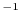
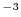

Next: saxsdata.saxs_read() Read
Up: The saxsdata class: using
Previous: saxsdata() create
Contents
Index
ini_saxs(atmsel, filename='$(LIB)/formfactors-int_tab_solvation.lib', s_min=0.0, s_max=2.0, maxs=100, nmesh=100, natomtyp=15, represtyp='heav', wswitch='uniform', s_hybrid=0.0, s_low=0.0, s_hi=2.0, spaceflag='real', rho_solv=0.334, use_lookup=True, nr=5000, dr=0.1, nr_exp=300, dr_exp=1.0, use_offset=False, use_rolloff=False, use_conv=False, mixflag=False, pr_smooth=False)
Routine to initialize the SAXSDATA structure. Here the sampling
in reciprocal space needs to be specified; currently only
equidistant sampling is possible. Moreover, the parameters
for the scoring function and for its computation are set.
s_min and s_max specify the minimum and maximum frequency in
reciprocal space, in Å
. maxs gives the maximum number of
frequencies, and nmesh the actual number (which must be less than maxs).
natomtyp gives the number of ''atoms'', i.e. scattering centers.
represtyp specifies the representation : 'heav', 'allh', or 'CA'.
filename is the name of the library for formfactors.
wswitch is the character for filter of scoring function: 'unity', 'sq', or
'hybrid'. If 'hybrid', then s_hybrid is the frequency above which
weighting is applied.
s_low and s_hi give the lower and upper cutoff for the bandpass
filter in Å
.
spaceflag specifies how
should be computed. 'real' space via  or 'reciprocal'. 'real' is more than a magnitude faster but less accurate for
high resolution (
).
or 'reciprocal'. 'real' is more than a magnitude faster but less accurate for
high resolution (
).
rho_solv gives the electron density of solvent, in
Å
. (The
default 0.334 corresponds to H
O.)
use_lookup, if True, uses lookup tables for SINC and COS functions,
giving a significant increase in speed for 'reciprocal' mode.
nr gives the number of points for
sampling, and dr the spacing
of these points in Å.
nr_exp gives the number of points for
sampling, and
dr_exp their spacing.
If use_offset is True then allowance is made for an additive constant
in the experimental spectrum.
If use_rolloff is True, allowance is made for Gaussian rolloff in
the model spectrum.
If use_conv is True, the spectrum is multiplied with the formfactor of
nitrogen ( 3Å) spectrum.
If mixflag is True then more than one conformation is modeled
simultaneously.
If pr_smooth is True smoothing of p(r) is done.
Next: saxsdata.saxs_read() Read
Up: The saxsdata class: using
Previous: saxsdata() create
Contents
Index
Automatic builds
2010-04-21